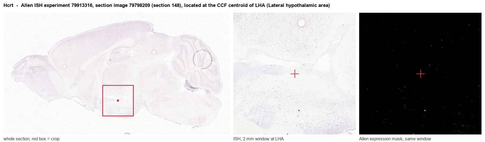
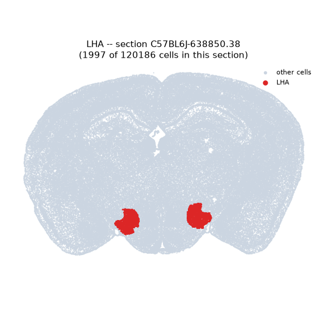
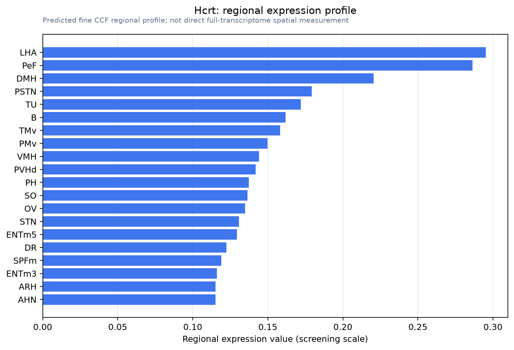

Hcrt
Spatial tier: RESTRICTED · Class: OTHER · Top region: LHA (Lateral hypothalamic area) · Positive regions: 17/554
43.8Discovery Score
35.4Targetability Score
CEvidence grade C
What this means: Hcrt: fine CCF profile is restricted toward LHA (top regions: LHA, PeF, DMH, PSTN, TU; 17 positive regions); direct spatial validation is still required.
Function in LHA: evidence, prediction, innovation
- Gene function
- HCRT encodes prepro-orexin, cleaved into the neuropeptides orexin-A (hypocretin-1) and orexin-B (hypocretin-2). These peptides act on two Gq-coupled receptors, OX1R and OX2R, to depolarise target neurons throughout the arousal system. Orexin neurons are found only in the lateral hypothalamus and adjacent perifornical area but project brain-wide; loss of these neurons causes narcolepsy with cataplexy in humans and dogs.
- Region function
- The lateral hypothalamic area is a heterogeneous hub of orexin, MCH, GABAergic and glutamatergic neurons that integrates arousal with feeding, reward seeking and autonomic output, projecting widely from cortex to spinal cord.
- Published in this region
- direct Direct and foundational. Chemelli et al. 1999 showed that orexin knockout mice have a narcolepsy phenotype with behavioural arrests and fragmented sleep, establishing the gene-region-behaviour link. Subsequent work has mapped the lateral hypothalamic orexin population in detail: Tyree et al. 2018 review its role as a hub for arousal and motivation, and Li et al. 2022 showed that hyperexcitable lateral hypothalamic arousal circuits drive sleep instability in ageing mice.
- Predicted function
- Prediction: the open question is not whether orexin promotes arousal but how graded peptide release encodes motivational state. Fine-grained manipulation - partial, adult-onset Hcrt knockdown or graded chemogenetic tuning of orexin neurons - is predicted to reveal a dose-dependent separation in which modest reduction selectively impairs effortful, high-cost reward seeking and arousal during anticipation, while only substantial loss fragments sleep-wake architecture; dual orexin receptor antagonists such as suvorexant should reproduce the sleep phenotype without the motivational one at low doses.
- Innovation
- ★☆☆☆☆ 1/5 Orexin in the lateral hypothalamus is one of the most intensively studied peptide-region systems in all of neuroscience, with an approved drug class built on it.
- Tools
- Hcrt knockout, orexin-ataxin-3 ablation and orexin-Cre mice; Hcrt-IRES-Cre and orexin-eGFP reporters; orexin-A and orexin-B peptides; dual orexin receptor antagonists suvorexant, lemborexant and almorexant; selective antagonists SB-334867 (OX1R) and TCS-OX2-29 (OX2R); orexin sensors for in vivo release imaging.
- References
Direct evidence located at the region

Allen ISH experiment 79913316, section image 79798209 (section 148): the section that contains the CCF centroid of Lateral hypothalamic area according to the Allen image-to-atlas alignment (reference_to_image), with a 2 mm window around that point. Left: whole section, red box = window. Middle: ISH signal. Right: Allen's expression-mask view of the same window. open this image in the Allen viewer
Look it up yourself: Allen Mouse Brain ISH for HcrtAllen reference atlas: LHA (structure 194)ABC Atlas MERFISH viewer(in the ABC Atlas choose dataset MERFISH-C57BL6J-638850-CCF, colour cells by gene "Hcrt" or by parcellation_substructure "LHA")All genes confined to LHA + 3-D brain
Direct spatial evidence
MERFISH REGION LOCATOR

Regional expression figure

Predicted WMB × fine-CCF profile; not direct full-transcriptome spatial measurement.
Spatial profile
Evidence and specificity
- Evidence status
- PREDICTED_FINE
- Direct sources
- None; predicted localization only
- Exclusive threshold
- 12 positive regions out of 554
- Spatial specificity
- 0.321
- Top-region fraction
- 0.069
- Filter status
- PASS
Interpretation limits
- Cell-type-to-region projection is imputed expression, not direct spatial measurement.
- Adult reference atlases do not establish stability across age, sex, strain, state, or disease.
- Transcript abundance does not guarantee protein abundance or genetic-tool performance.